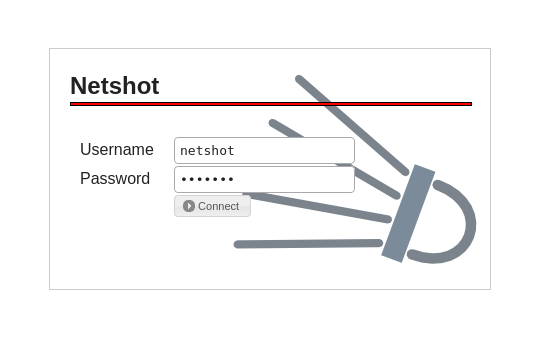
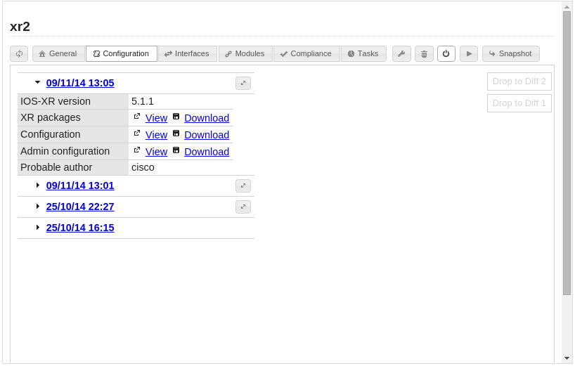
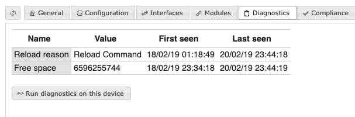
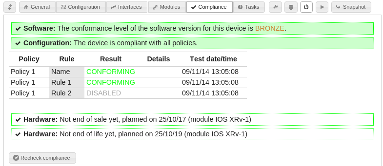
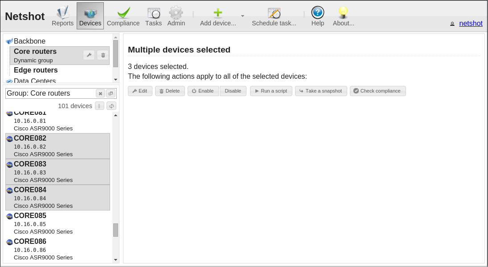
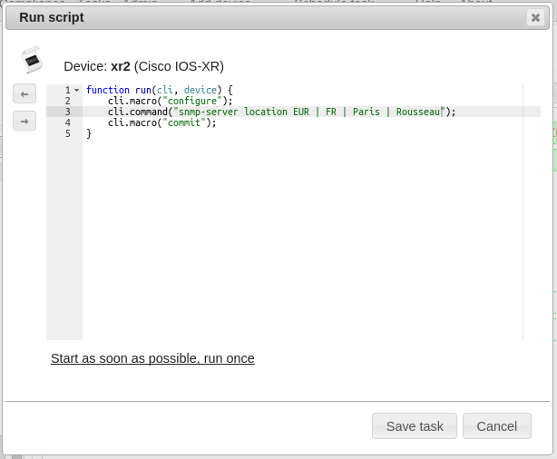
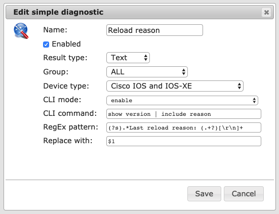

Overview
Netshot is a network device manager.
With Netshot, you can:
- Have an operational inventory of your devices.
- Backup device configurations.
- Track the changes on your network.
- Track the IP and MAC addresses of your network devices.
- Track software versions of your devices.
- Track the hardware support of your devices.
- Track the conformance of your devices, based on best-practice or customized policies and rules.
- Script changes on your devices.
- Use the REST API to interact with Netshot from other components or applications.
Many of the most used network devices in the world are supported out-of-the-box and you can easily add your own drivers - this is a simple script file to write.
Main interface
Netshot is available through a Web application GUI.
First you have to authenticate. The authentication settings must have been defined by the administrator. If nothing has been done since the setup of the database, the default account is netshot/netshot.
Once logged in, you can start using Netshot. A the top of the page is the main button bar, which allows you to navigate between the sections.
Click on your login at the right of the page to see your current permission level. You can also change your password (if using a local account) from this dialog.
Devices
Using the Devices section, you can browse the devices that Netshot manage, search for them or their data, start tasks to refresh their status or configure them, etc.
A device is a network equipment as seen by Netshot. Which type of device is supported or not by Netshot (vendor, family, collected data, automatic discovery and snapshots) depends entirely on the loaded device drivers.
Adding devices
Before adding any device, you must have created the required credential sets in the Admin page. You must have a read-write role to be able to add devices.
To add a single device:
- On the Devices page, click on Add device....
- Select the proper domain for the device.
- Enter the IP address of the device (or a name that the DNS engine on the Netshot server can resolve).
- If you check the Autodiscover device type box, Netshot will start with some SNMP requests to guess which type of device it is talking to, in which case you must have declared a valid SNMP credential set. Otherwise you have to select yourself the type of device so Netshot knows which "language" to speak when talking to the device.
- Once the type of device is discovered (either manually or by SNMP polling), the proper driver is assigned, and Netshot will start a Snapshot task, to capture information about the device (including the current configuration).
- If you check the Override connection settings box and enter an IP address, an SSH or a Telnet TCP port, these settings will be used to connect to the device rather than the primary management address. This allows for connection through a port redirection proxy for example.
- By default, Netshot will try and use the globally defined credential sets. Starting with Netshot 0.7.0, you can provide device-specific credentials by selecting Specific SSH account, Specific SSH Key or Specific Telnet account.
To add a bunch of devices:
- On the Devices page, click on Add device... drop down menu, Scan subnet(s) for devices...
- Select the proper domain for these devices.
- Enter the list of IP addresses (e.g. 1.2.3.4) or IP subnets (e.g. 1.2.3.0/24), one by line and click on Scan.
- Netshot will poll each of the IP addresses using the known SNMP credential sets for the domain, and create devices based on the SNMP responses.
Searching for devices
You can simply find devices based on their name (or virtual name, e.g. VDC), or their IP address: just type it in the Search... box and type Enter.
To remove the filter, click on the Clear (cross) button.
You can also build advanced searches. Open the Advanced search dialog, and use the buttons to write a logical search string. Note that by selecting a type of device, you can filter on the device fields which are specific to this type.
Device groups
You can create groups of devices.
You must have a read-write role to be able to add, edit or remove groups.
- You can use groups to easily find/filter your devices.
- You can create tasks to run over groups, instead of creating individual tasks.
- When creating policies, you have to select a target group.
- Some of the reports break down data based on the groups.
To create a group, click on Add devices... drop down menu, and then on Add a group... When creating a group, you select the type of group, either static or dynamic (this can't be changed later). Then edit the group to start adding devices.
Select a group by clicking it in the group tree. The device list will be refreshed, and will display only the devices contained in the selected group. When a group is selected, the Edit and Delete buttons appear.
A static group needs each device to be manually selected and added. A dynamic group is based on a search logical expression. Dynamic groups are automatically refreshed whenever they are edited or devices change.
You can arrange your groups in a hierarchy: enter a folder path, e.g. Backbone A/Core devices/P routers.
This will only affect only how groups will be displayed in the Devices page.
If you check the Hide this groups in reports box, the group can be used as any other group to filter devices or to apply compliance policies, but it won't appear in the reports.
You can delete a group, by clicking on the ad hoc button. Any associated policy or scheduled task would be deleted as well.
Device information
Click on a device in the left-hand side list to display it.

The General tab gives the following information:
- Name: the hostname of the device, captured by the driver during snapshots.
- Management IP: the IP address used by Netshot to access the device.
- Management Domain: the management domain the device belongs to.
- Location: the physical location of the device, captured by the driver during snapshots (it is often the SNMP location).
- Contact: the person or service to contact about the device, captured by the driver during snapshots (it is often the SNMP contact).
- Network Class: the category of equipment, among ROUTER, SWITCH, FIREWALL, LOADBALANCER, etc. as set by the driver during snapshots.
- Device Type: the type of equipment, i.e. the driver used to talk with the device. This cannot be changed without deleting the device.
- Family: the subtype of equipment, set by the driver during snapshots.
- Software Version: the version of OS for this equipment, set by the driver during snapshots.
- Serial Number: the main serial number of the device.
- Creation Date: when the device was created in Netshot (and the login who did it).
- Last Change: when the device was last modified (by a snapshot, or manually edited).
- Comments: free text set by manually editing the device, or by a device script.
- Member of: the groups the device belongs to.
- And additional fields, set at the device level by the specific driver.
The Interfaces and Modules tabs are populated by the device driver during snapshots. The accuracy of this information will depend on how the specific driver for this device is coded and what be understood using the CLI of the device.
Configuration history
The Configurations tab gives the history of configurations of the device.
Which items are contained by a configuration is defined by the device driver. Any information that may change over the time, and which changes are important to track should be stored there.
Click on a date to see the content of the configuration. Click on the Compare button to display the differences between two successive configurations, in a new window (ensure your browser is not blocking popups). Items of the configuration defined as comparable in the device driver are automatically compared and differences are displayed. You can navigate through successive changes by using the Previous and Next buttons at the top of the window. You can also compare two non-successive configurations: drag and drop the date of the two configuration entries onto the Drop to Diff targets on the right-hand side of the panel. Then click on the Compare button that should have appeared.

Long text configuration items, like full running configuration of a Cisco IOS device, can be displayed in a new window by clicking on the View link, or can be directly downloaded as a file by using the Download link.
Device properties
You can edit some of the properties of the device by clicking on the Edit button (wrench icon) in the device view toolbar.
You must have a read-write role to be able to edit devices.
- Name: the name of the device can't be edited, it is filled by the device driver during snapshots.
- IP address: the management IP address of the device, used by Netshot to access it. You can change it if for some reason Netshot should use another IP address to administrate the device.
- Domain: the management domain the device belongs to.
- You can select which credential set(s) should be used to access the device. If several sets are selected, they will be tried in turn until one works.
- In case of failure, also try all known credentials: if you check this box, and Netshot can't connect to the device using the selected credential set(s), other ones will automatically be tried in turn, if they are associated with the same management domain or with no domain at all.
- Override connection settings: check this box and fill any of IP, SSH port or Telnet port to force Netshot to connect to the device via an alternate IP or port.
- Specific SSH account, Specific SSH key and Specific Telnet account: select one of these options, and fill in the corresponding text boxes, to provide specific credentials for this device (instead of using the globally defined credential sets).
- You can store some free-form text in the Comments box.
You can disable a device, by clicking on the relevant button in the device toolbar. No snapshot task will be executed over a disabled device. Click again on the button to enable the device back.
Snapshots
Scheduling snapshot tasks requires read-write permissions.
During a snapshot task, Netshot connects to the device (either by SSH or Telnet, depending on the available credentials, and also on what the specific driver supports.
Once connected to the device, Netshot delegates all the snapshot work to the driver.

- To force a snapshot, click on the Snapshot button in the device view toolbar.
- As with any other task, you can schedule repeating snapshots.
- You can also schedule or run snapshots onto groups of devices. To do so, click on the Schedule task... button in the main application toolbar.
- If the device supports the sending of specific SNMP traps or syslog messages whenever its
configuration changes, and assuming the driver supports it too, then Netshot can detect the
change and will schedule a snapshot to be automatically taken a few minutes later.
The requirements:
- The device must be configured to send traps or syslog messages to Netshot.
- The SNMP trap receiver or the Syslog servermust be enabled in Netshot.
Device diagnostics
The Diagnostics tab of the device view displays the current diagnostic results, as they were collected during the last Run diagnostics task on this equipment.
The diagnostics themselves must be defined in the Diagnostics main page.
- The Name column displays the name of the diagnostic.
- The Value column displays the last collected value of the given diagnostic.
- The First seen column gives the date when this value was got for the first time.
- The Last seen column gives the date when the value was got for the last time (thus the last time the diagnostics were run on the device).
A Run diagnostics task is by default automatically scheduled after snapshot tasks, which should collect the up-to-date diagnostic results. You can force a diagnostic task to run and refresh the diagnostic values on the given device by clicking the Run diagnostics on this device button.
Device compliance
The Compliance tab of the device view gives the compliance status of the device. The policies are defined in the Compliance main page.
There are several compliance parts:
- Software compliance: the device will be flagged as Gold, Silver or Bronze level, if a software rule matches or non compliant if there is no match.
- Configuration compliance: the table will give the result of each rule when the compliance check was lastly executed for the device.
- Hardware compliance: this gives the computed end of sale and end of life dates.
The compliance status of a device is automatically refreshed after each snapshot however you can force it to be reevaluated by clicking on the Recheck compliance button and starting the task. This requires read-write role.
Device tasks
In the Taks tab of the device view, you can see the last tasks related to the device. You can see the details of a finished task, including its logs, and cancel a scheduled task before it is actually executed.
Selecting multiple devices
You can select multiple devices in the device list on the left:
- Select a first device, then press the Shift key while clicking on a second device to select all devices between these two ones.
- Select a first device, then press the Ctrl key while clicking on a second device to select just these two devices.
- Click on the Select all devices button (just below the Search box) to select all the devices currently displayed in the device list.
When you select several devices in the device list, you get the Multiple devices selected panel in the right. There you can do actions that will apply to all selected devices. However you should note that applying actions to a very high number of devices (e.g. several hundreds or thousands) can be quite slow.
When scheduling a script to be run over several devices, you have to select the device type (driver) your script refers to. Only devices of this selected type, among the ones you've selected, will actually be processed.
Starting actions on multiple devices requires read-write & device commands permission level.
Running a script
Device scripts allows you to program commands to be sent to a device or a set of devices. The scripts are written in Javascript language, which is well documented over the Internet. Passing simple commands to a network equipment can be done with a few lines only, and doesn't require real programming skills.
To run a script over a device, click on the Run script icon in the device toolbar.
Running scripts requires read-write & device commands permissions. Obviously, you have to be very cautious with the commands you run over your network devices. Netshot won't check anything, it will simply execute what you write, even if this breaks the target device.
- The Run script dialog contains a simple Javascript code editor, where you have to put your Javascript code, that will be executed over the target device.
- Once you have written your script, and before starting the task, you can save the script as a template, so you can load it later if you want to run the same script again. Note that script templates are stored linked to the device driver, so depending on the type of device you are working on you will only see the relevant script templates. Use the Save and Load buttons on the left of the code editor to load or save script templates.
- As with any other task, you can start it immediately, or schedule it for a late execution or as a repeating event. To do so, click on Start as soon as possible, this will expand and you will be able to select advanced scheduling options.
The entry point in the script is the run function. This is what Netshot will call, with the following parameters:
- cli: an object to interact with the device through CLI.
- cli.macro(macro): use a macro to change mode as defined in the device driver.
- cli.command(command): sends a command to the device and returns the result.
- device: an object to change device's attributes.
- device.set(attributeName, attributeValue): change device's attributes, either standard or driver-specific attributes.
For example, the Cisco IOS driver defines the configure macro which brings you to the configure well-known mode, where you can enter configuration commands that will apply to the running configuration. It also defines the end macro to quit the configure mode, and the save macro to copy the running to the startup configuration. Thus to change the description of interface GigabitEthernet0/0/16, run the following script:
function run(cli, device) { cli.macro("configure"); cli.command("interface GigabitEthernet0/0/16"); cli.command("description New description"); cli.macro("end"); cli.macro("save"); }
The following script gets the actual OSPF router-id and writes it into the device comments:
function run(cli, device) { cli.macro("enable"); var protocols = cli.command("show ip protocols"); var idPattern = /Routing Protocol is "ospf(.|\r|\n)+? Router ID ([0-9\.]+)/; var match; if (match = idPattern.exec(protocols)) { var rid = match[2]; device.set("comments", "OSPF Router ID = " + rid); } }
Diagnostics
Thanks to the Diagnostics section, you can collect custom data from your equipments, by making Netshot run specific commands on the devices (and possibly process the result).
Once the diagnostics are defined within Netshot, the commands are effectively executed, and the output is effectively collected by running a Run diagnostics task. This can be done manually by scheduling this type of task, and this is, by default, automatic after a snapshot task.
After the data is saved in the database, it is possible to build search and dynamic group queries based on it. One may also create compliance rules to check the diagnostic result.
Creating, deleting or modifying diagnostics requires read-write & device commands permissions.
Simple diagnostics
Simple diagnostics consist of one command to execute in a specific mode of a certain type of device. The output of the command may be further processed by applying a search and replace regular expression.
To create a simple diagnostic, click the Create diagnostics... button in the main toolbar, in the Diagnostics tab. Then select Simple diagnostic and fill in the required information. The RegEx pattern and Replace with fields are optional.
For example, assume you want to collect the reload reason of Cisco IOS devices. A way to collect this information is to look at the output of the show version command:
router1#show version Cisco IOS XE Software(...) router1 uptime is 2 days, 23 hours, 21 minutes (...) Last reload reason: Reload Command (...) Configuration register is 0x2102
Thus the following diagnostic may be added to execute the command and exact the interesting part:
Note the (?s) modifier in the regular expression: this will make .* match all the lines before and after the interesting line, to remove them all.
Javascript-based diagnostics
When simple diagnostics are not smart enough to properly collect some diagnostic information, Javascript-based diagnostics>should bring all the needed flexibility.
A Javascript-based diagnostic is a piece of Javascript code which must define a diagnose function which will be called by Netshot to run the diagnostic. This entry point will be called with the following parameters:
- cli: an object to interact with the device through CLI.
- cli.macro(macro): use a macro to change mode as defined in the device driver.
- cli.command(command): sends a command to the device and returns the result.
- device: an object to retrieve known information about the device.
- device.get(attributeName): get the current value of a known attribute.
- diagnostic: an object to set the diagnostic result value.
- diagnostic.set(value): set the diagnostic result for the current device.
- diagnostic.set(diagnosticName, value): set the result of the diagnostic identified by its name.
For example, the following code retrieved the current OSPF routed-id from IOS-XR devices:
function diagnose(cli, device, diagnostic) { if (device.get("type") !== "Cisco IOS-XR") { return; } cli.macro("exec"); var showOspf = cli.command("show ospf"); debug("showOspf = " + showOspf); var routerId = showOspf.match(/Routing Process .* with ID ([0-9\.]+)/m); routerId = routerId ? routerId[1] : "Unknown"; diagnostic.set(routerId); }
To create a Javascript-based diagnostic, click the Create diagnostics... button in the main toolbar, in the Diagnostics tab. Then select Javascript-based diagnostic and fill in the required information. The Result type must be consistent with the value the script will be setting.
Policy, rule and compliance
The purpose of the Compliance section is to keep your devices in a mastered state: any device not conforming to your own policies will be flagged so you can act and fix it.
- Software rules keep track of the running software versions of your devices.
- Hardware rules keep track of the hardware components in use in your network.
- Configuration policies and rules check the other attributes of the devices.
Once the rules are defined within Netshot, the status of a device is refreshed by running a Check compliance task. This can be done manually by scheduling such a task, and anyway this is automatic after snapshot and diagnostic tasks, to ensure that a device becoming not compliant after a configuration change is immediately flagged.
The software compliance status can be seen in the Compliance tab of the device view, or at the global level in the Software compliance report.
Creating, deleting or modifying policies or rules requires read-write permissions.
Software rules
The software rules are simple rules which assign a level (Gold, Silver or Bronze) to a device, depending on its software version. The software version of a device, which can be seen in the General tab of the device view, is written by the device driver during the snaphots.
- A Gold level means the device is fully compliant with the software strategy.
- A Silver level means the running software version is fine, but not the best choice.
- A Bronze level means the running software version should be rolled out soon.
When evaluating the software compliance status of a device, the rules are processed in order (from top to bottom as seen in the Software version compliance table). The first rule whose criteria match the device's properties assigns its level to the device, and the process stops here.
If no rule is matched, then the device is non compliant.
To create a software rule, go to the Compliance main page, select the Software section then click on the +.
- You can associate the rule with a specific device group, or to all devices.
- You can select a device type (i.e. driver) or apply to all types.
- In Device family, enter a string to be found in the device family. If you check the RegExp box, the string will be interpreted as a regular expression, for more flexibility.
- If you want to define your software versions based on precise hardware part numbers, you can use the Part number field to restrict the match to devices containing this piece of hardware. If you check the RegExp box, the string will be interpreted as a regular expression.
- In Version, enter a string to be found in the software version field of the device. If you check the RegExp box, the string will be interpreted as a regular expression, for more flexibility.
- Eventually, select the level that will be assigned to any device matching all the criteria defined above.
You can reorder the rules by dragging and dropping a line in the Software version compliance table.
Hardware rules
Hardware rules aim at following up the support status of the hardware components of devices. An hardware rule defines the end of sale and end of life (end of support) dates for a specific part number. To evaluate the hardware support status of a device, Netshot selects the earliest date for end of sale, and for end of life among the contained cards (hardware modules).
To create an hardware rule, go to the Compliance page, select the Hardware section, and click on + to add the rule.
- You can select a specific group the rule will apply to, or any group.
- You can select a specific device type (i.e. driver) for the rule, or any type.
- You can enter a Device family, string to be looked in the family assigned by the driver. If you check the RegExp box, the string will be evaluated as a regular expression.
- You have to enter a part number, to find modules (as populated by the driver during snaphots).
- If all the previous criteria match for any module contained in the device, the end of sale and end of life dates will be assigned to the device, unless an earlier date is already assigned. You can let one of the two dates empty.
Configuration policies and rules
Apart from software and hardware rules, you can create advanced rules that will check the configuration or other attributes of the devices.
First you need to create a policy, which will contain the actual rules. A policy applies to a group of devices. If you want to assign a policy to all devices, just create a dynamic group without criteria, so it will contain all devices.
To create a policy, click on the Create policy... button in the main toolbar. To edit or delete a policy, select it first, the buttons will appear.
Once you have the policy, select it and click on the + button to add a rule. Note that the new rule is disabled by default, you have to edit it to enable it.
To edit a rule, select it and click on the Edit (wrench icon) button. You can enable or disable it, and add exemptions. To add an exemption, enter the name of the device in the search field, select the device among the results, select the end-of-exemption date, and click on the arrow button.
A rule will check the device attributes and return one of the following:
- CONFORMING: the device conforms to the policy.
- NONCONFIRMING: the device doesn't conform to the policy.
- NOTAPPLICABLE: the rule doesn't apply to the device.
- DISABLED: the rule is currently disabled.
- EXEMPTED: there is an exemption for this device and this rule.
- INVALIDRULE: this could happen if a rule script has syntax errors.
There are two types of rules: text-based (or regular expression) rules and script-based (Javascript) rules.
Text-based rules
Text-based rules just check that a specific attribute of the device (most of the time, the running configuration) matches some text, or a regular expression.

- Select the type of device (the driver). For devices of another type, the result of the rule checking will be NOTAPPLICABLE.
- Select the field to check. This depends on the selected type of device.
- The context is a hierarchy of regular expressions to find a specific block within the text attribute .
- The identified blocks will have to match the text provided in the main textbox.
- This text can be interpreted as a regular expression by checking the relevant box.
For example, in Cisco IOS if you want all interfaces to have a description, define a rule as follows:
- Device type: Cisco IOS and IOS-XE
- Field: Running configuration
- Context: ^interface .*
- All blocks
- Text (Regular expression): ^ *description .+
- The text must exist
Other example, in IOS-XR, if you want all GigabitEthernet interfaces of OSPF to be configured as point-to-point:
- Device type: Cisco IOS-XR
- Field: Configuration
- Context:
^router ospf .* ^ *area .* ^ *interface GigabitEthernet.*
- All blocks
- Text (Regular expression): (?m)^ *network point-to-point$ ((?m) is to enable the multiline mode in the regular expression)
- The text must exist
Script-based rules
The script-based rules are Javascript code.
Click on Edit the script... to open up the Javascript editor. While you are writing your script, you can test it on a specific device by selecting a device at the bottom of the editor and clicking on Test.... Click on the underlined result to see the logs.
Here is a basic (and useless) rule, which will set all devices compliant:
function check(device) { return CONFORMING; }
The function check(device, [debug]) must exist in the code, this is the entry point, which will be called whenever the device must be validated by the rule.
- device is an object to access data of the device
being checked, and some util functions.
- device.get(attribute) allows you to retrieve
an attribute of the device, so you can make further validation on it.
The attribute can be of:
- "type", the driver of the device.
- "name", the name of the device.
- "family", the family of the device.
- "location", the location of the device.
- "contact", the contact for the device.
- "softwareVersion", the OS version of the device.
- "serialNumber", the main serial number of the device.
- "networkClass", the class of the device (e.g. ROUTER, SWITCH, FIREWALL, etc.).
- "virtualDevices", an array of names of the vitual devices embedded in this device (e.g. the list of VDC names for a Cisco Nexus device).
- "vrfs", an array of names of the VRFs configured on the device.
- "interfaces", the list of interfaces of the device.
- Any other attribute name defined by the driver of the device.
- device.get(attribute, otherDevice), where otherDevice is either the ID or the name of another device, will retrieve for you the given attribute value from the specified device instead of the current device. By using this feature, you can compare configurations between devices.
- device.nslookup(host) will return a DNS resolution (either direct or reverse) of the passed name.
- device.findSections(configuration, section), where text is a String and section is a Javascript RegExp object, will find in configuration all lines matching section, and will return them along with their content, i.e. following lines which are more indented.
- device.get(attribute) allows you to retrieve
an attribute of the device, so you can make further validation on it.
The attribute can be of:
- debug(message) is a function that you can call to log debug messages. These messages will appear in the logs of the Check compliance task.
The check function must return one of the following special values:
- CONFORMING
- NONCONFORMING
- NOTAPPLICABLE
You can also return the same value along with a text message, that would appear in the device compliance status, mainly to indicate why the device was not compliant:
return { result: NONCONFORMING, comment: "VTY ACL not applied" };
Reports
The Reports section gives an overview of the network status by aggregating data collected by the other modules.
Configuration changes
The Configuration changes report shows the configuration changes detected by Netshot over the last hours or days, or on a precise day.

Note that the change date/time is the moment when Netshot took the snapshot, not the precise time of the change itself. Even if the snapshot was automatically taken after a detection of the change, it occurred several minutes after the actual change. Also, if several changes were made to the configuration of the devices within a few minutes, Netshot probably saw a single change only.
Device access failures
The Device access failures report lists the devices which haven't been successfully backed up by a snapshot task for the last X days, where X can be selected using the numeric field (3 by default). Change the number of days and click the Update button to refresh the list.
The disabled devices are excluded from the list.
The purpose of this report is to easily identify which devices are not responding to Netshot snapshot attempts anymore.
Configuration compliance
This report gives the compliance percentage for device groups. A device is flagged as non compliant so long as it doesn't pass at least one rule.
If you click on a group, you'll see the list of non conforming devices.
If a group of devices doesn't appear in the compliance reports, this is probably because it was marked as hidden. Edit it in the Devices section to change this.
Software compliance
This report will give you, for each group of devices, the percentage of Gold, Silver, Bronze and non compliant devices, resulting from the software rules defined in the Compliance section.
Click on a category in the legends to display the matching devices at the bottom of the page.
Hardware support status
This report will give the trend of hardware support with time. This is based on end of sale and end of life dates that you have defined for part numbers in the Compliance section. When an hardware module becomes end of sale (or life), any device with such a module becomes itself end of sale (of life). The graph in the Hardware support report gives the number of end of sale and end of life devices, increasing with time. The milestones (dates when bunches of devices become end of sale or life) are listed below the table. If you click on the number of devices, you'll get the actual corresponding devices.
Data export
You can export data collected by Netshot into an Excel file.
The options are self-explanatory. Click on Download the result to generate and get the file. The generation of the file could take a few minutes if there are many devices in the database.
Tasks
In the Tasks section, you can see the current tasks, and also schedule global tasks.
You can see the running, scheduled (waiting), succeeded, failed, cancelled tasks, by clicking on the proper tab. For the passed tasks, today's tasks only are displayed by default, but you can select another day to see the history.
Click on the first button to refresh the list of tasks.
You can schedule a global task by clicking on Schedule... in the main toolbar.
If you want to look at the task history of a specific device, you can see it in the Task tab of the device in the Devices view.
Administration
Netshot configuration file
Some global options can be configured in the Netshot configuration file.
When started, Netshot will try to find and read a file called netshot.conf in the current directory, then /etc/netshot.conf if the first one wasn't found. If this file is not found at all, Netshot won't start.
In the configuration file, each line must be of the form:
parameter = value
If a line starts with #, it will be ignored.
Netshot needs to be restarted after a change to the configuration file so the new parameters are taken into account.
Logging configuration
- netshot.log.file = /var/log/netshot/netshot.log: sets the location and name of the main Netshot log file. Log files will be automatically rotated (see next settings). The default is netshot.log (current directory).
- netshot.log.file = CONSOLE: for debugging purpose, lets Netshot output its logs directly to stdout.
- netshot.log.maxsize = 1: sets the maximum size of the log file to 1MB. The default is 2. The log file will rotated when reaching this size.
- netshot.log.count = 10: sets the number of log files to keep. The default is 5.
- netshot.log.level = INFO: sets the global level of logs to send to the file. The default is WARN. The possible values are OFF, ERROR, WARN, INFO, DEBUG, TRACE, ALL. Changing this level might create lots of logs.
- netshot.log.class.ClassName = DEBUG: sets the log level of a specific class ClassName to a custom level. This obviously requires some knowledge of the Netshot internal code.
- netshot.log.audit.file = /var/log/netshot/audit.log: enables logging of audit-related messages (authentication, authorization) to the given file. Setting the audit level to something like INFO is also required.
- netshot.log.audit.level = INFO: sets the logging level of audit-related messages.
- netshot.log.syslog1.host = 10.0.16.16: enables remote logging (syslog) to the specified host. Increment the number, e.g. syslog2, syslog3, etc. to configure several syslog destinations.
- netshot.log.syslog1.facility = LOCAL7: sets the Syslog facility to use for the syslog server.
Database configuration
- netshot.db.url = jdbc:mysql://server/netshot01: sets the URI to access the Netshot database.
- netshot.db.username = user1: sets the username to be used to access the database.
- netshot.db.password = pass1: sets the password to be used to access the database.
Embedded HTTP server
- netshot.http.ssl.keystore.file = /usr/local/netshot/netshot.jks: sets the location of the keystore containing the SSL certificate for the embedded HTTPS server. The default is netshot.jks in the current directory. Netshot can't start without this file.
- netshot.http.ssl.keystore.pass = pass2: sets the password of the keystore containing the SSL certificate for the embedded HTTPS server. The default is netshotpass.
- netshot.http.baseport = 9443: sets the TCP port of the embedded HTTPS server. The default is 8443.
Syslog server
The embedded Syslog server listens for Syslog messages to detect when changes are made on devices.
- netshot.syslog.port = 1514: sets the UDP port to listen Syslog messages on. The default is 514, which requires root permissions under Linux.
- netshot.syslog.disabled = true: disables the embedded Syslog server. It is enabled by default
You can choose to make Netshot listen for Syslog on port 1514 (non root user) and use iptables to rewrite the destination port. See the installation guide.
SNMP trap receiver
The embedded SNMP trap receiver listens for SNMP traps to detect changes on devices.
- netshot.snmptrap.port = 1162: sets the UDP port to listen SNMP traps on. The default is 162, which requires root permissions under Linux.
- netshot.snmptrap.community = public: sets the SNMP community of the traps sent to Netshot for change detection. The default is "NETSHOT".
- netshot.snmptrap.disabled = true: disables the embedded SNMP trap receiver. It is enabled by default
You can choose to make Netshot listen for SNMP traps on port 1162 (non root user) and use iptables to rewrite the destination port. See the installation guide.
User authentication
- netshot.aaa.radius1.ip = 1.2.3.4, netshot.aaa.radius1.authport = 1812, netshot.aaa.radius1.secret = MyKey#1: defines the first RADIUS server to be used for user authentication.
- You can define up to 3 RADIUS servers.
- netshot.aaa.radius1.timeout = 10: defines the timeout value (in seconds) for the first RADIUS server. The default is 5 seconds.
- netshot.aaa.radius.method = mschapv2: sets the RADIUS method
to MSCHAPv2 (this is the default). The other options are:
- netshot.aaa.radius.method = pap: PAP.
- netshot.aaa.radius.method = chap: CHAP.
- netshot.aaa.radius.method = eap-md5: EAP-MD5.
- netshot.aaa.radius.method = eap-mschapv2: EAP-MSCHAPv2.
- netshot.aaa.maxidletime = 1200: sets the maximum idle time for a logged in user, after which he/she will be disconnected. In seconds. The default is 1800.
Drivers
- netshot.drivers.path = /usr/local/netshot/drivers: defines a directory where to look for additional device driver files. By default, Netshot will only use the embedded drivers (in .jar file).
Snapshots
- netshot.snapshots.dump = /usr/local/netshot/configs: defines a directory where to save device configurations after each snapshot task. By default, no directory is device, so no dump will be done.
- netshot.snapshots.auto.interval = 16: sets the time (in minutes) to wait after a change is detected on a device, before starting a snapshot. The default is 10 minutes.
- netshot.snapshots.auto.anyip = true: tells Netshot to look at non-management IP addresses to identify a device sending a trap or a Syslog message, when the source IP address of the message is not a known management IP address in Netshot. This feature is disabled by default
General
- netshot.tasks.threadcount = 16: the number of tasks that can be executed concurrently. The default is 10.
Authentication
Netshot supports both local and remote accounts. Local means the authentication process stays local to Netshot (the user is stored in the local database) while remote means that authentication is delegated to a RADIUS server.
When an user tries to log into Netshot, Netshot first looks for a local account in the database. If the local account exists, it checks the password and accepts or denies the user based on that, with the assigned permission level. If the local account doesn't exist, and at least one RADIUS server is configured, Netshot will try a RADIUS challenge. If RADIUS fails, then the user is rejected. If it succeeds, the user is allowed as visitor by default. If the RADIUS response contains a Service-Type attribute equals to AdministrativeUser (well known value), then the user is allowed as admin. If the Service-Type attributes equals to OutboundUser then the user gets read-write and device command permissions. If the Service-Type attribute equals to NASPromptUser then the user gets read-write permissions. However if the user exists in the database as remote user, and has been successfully authenticated by RADIUS, then the permission level locally assigned to the account will override the RADIUS-provided level.
To enable local authentication, simply create local accounts in the Admin page.
- Users with visitor permissions may only see the content of Netshot, then cannot change anything.
- Users with read-write permissions may see, create, edit, delete everything, schedule tasks, but they cannot create, edit or create device scripts and diagnostics, nor touch to the items from the Admin tab.
- Users with read-write & device commands permissions may also alter scripts and diagnostics.
- Users with admin permissions may do everything.
To enable RADIUS authentication, you have to declare the server(s) in the Netshot configuration file. You can have up to 3 servers. They will be tried one by one until one responds. For instance:
netshot.aaa.radius1.ip = 1.2.3.4 netshot.aaa.radius1.authport = 1812 netshot.aaa.radius1.secret = MyKey#1 netshot.aaa.radius2.ip = 1.2.3.5 netshot.aaa.radius2.authport = 1812 netshot.aaa.radius2.secret = MyKey#1
See the configuration section for more details.
Device domains
When adding a device to Netshot, you must associate it with a management domain. A management domain defines a set of parameters that will apply to the associated devices.
- The IP address defined in the management domain is the IP address of the Netshot server as seen by the devices of the domain. This can be useful in drivers which use FTP/TFTP to upload configuration items to Netshot.
- When creating device credential sets, you can assign them to a specific management domain. In that case, only the devices of the domain will use these credential sets.
The device domains are created in the Admin page. A domain can't be deleted if it contains any device or is associated to a specific credential set.
Device credentials
The credentials used to access devices are globally managed from the Admin page.
You can create SNMP v1, SNMP v2c, SNMP v3, Telnet and SSH (versions 1.5, 1.99 or 2.0) credential sets.
The SSH authentication can either use a simple password, or can be key-based. To add an SSH key credential set,
you need the public and the private RSA key couple. Assuming you've generated the keys using ssh-keygen,
just copy and paste the content of the files, ~/.ssh/id_rsa (private key) and
~/.ssh/id_rsa.pub (public key).
Although the credentials are offuscated in the Netshot database, it remains critical to ensure that the access to the Netshot database and to its hosting server is properly secured.
If you associate the credential set to a management domain, it will automatically be used only by the devices of the domain. If you don't specify a management domain, any device will be able to use it.
When adding a device to Netshot, the available credential sets will be tried in turn. The working credential set will be saved as the main one for the device.
Device types
The Admin page lets the administrator dynamically reload the Javascript driver files.
By clicking on the Reload the drivers button, the driver files will be scanned and reloaded, so any change made to them will be taken into account by Netshot.
Device drivers
Each supported type of device in Netshot rely on a single Javascript file, which is often called driver. This file describes the special attributes of the device type (e.g. running config and configuration register for a Cisco IOS device), and contains runnable code that will be executed when interacting with the device (e.g. taking a snapshot of the device).
Driver location
The Netshot package (especially the .jar file) contains several built-in drivers for some well known network device operating systems. These drivers are automatically loaded from the package without further action, which makes Netshot able to manage most of the router and switch devices out of the box.
Netshot also automatically loads drivers from the file system, which allows you to add your own driver files, by placing them in the directory defined in the Netshot configuration file by netshot.drivers.path.
If you want to make changes to an existing built-in driver, you can extract it from the .jar file, and copy it to the driver directory. The driver loaded from the file system has priority over the built-in driver.
The drivers can be dynamically reloaded while Netshot runs from the Admin page.
Driver structure
A driver is a Javascript file.
A driver must contain the following global objects:
- Info: object describing the driver.
- Device: object describing the specific attributes of this type of device.
- Config: object describing the attributes of a configuration of a device of this type (an history of these attributes will be kept, as opposed to the device attributes).
- CLI: object containing the logic to interact with the device's CLI, as a state machine.
- snapshot(cli, device, config, debug): a function to be called each time a snapshot on a device of this type is started.
- analyzeSyslog(message): function which will be automatically called whenever a Syslog message is received. The function must return true if it recognizes a configuration change notification for the type of device it supports.
- analyzeTrap(trap): function which will be automatically called whenever a trap message is received (with the right community). The function must return true if it recognizes a configuration change notification for the specific type of device it supports.
- snmpAutoDiscover(sysObjectID, sysDesc): function which will be called when a device is added to Netshot in autodiscovery mode. The driver will have to look at the sysObjectID and sysDesc and return true if it thinks it can support this device. If it returns true, Netshot will effectively add the device to the database, and assigns this driver to the device for future actions.